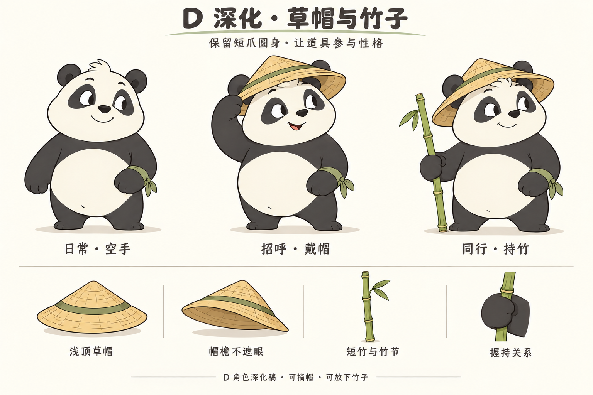
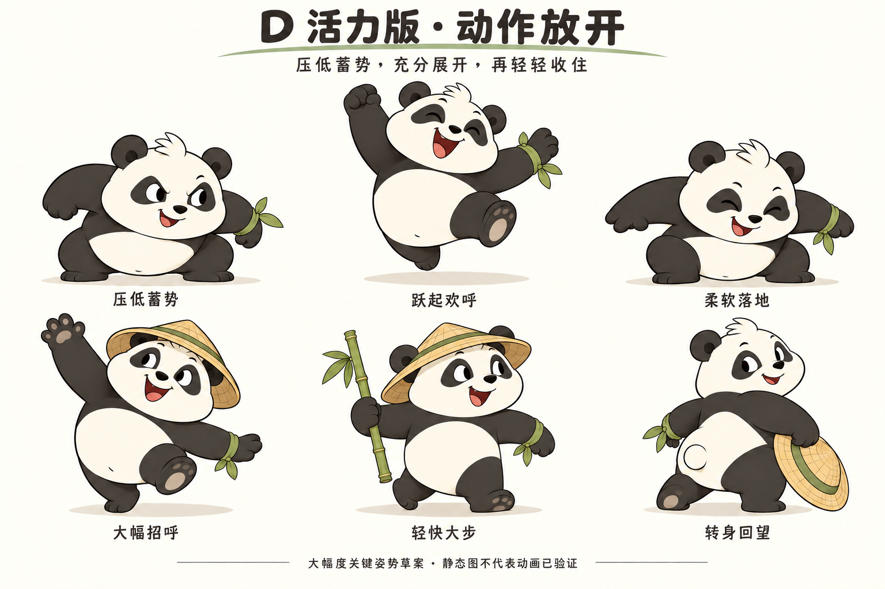
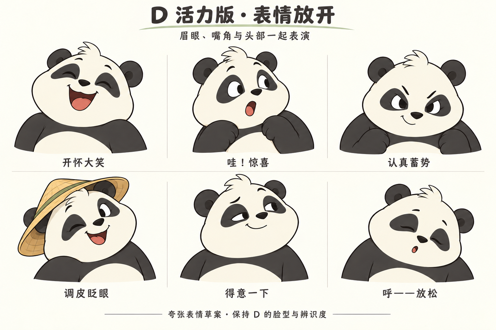
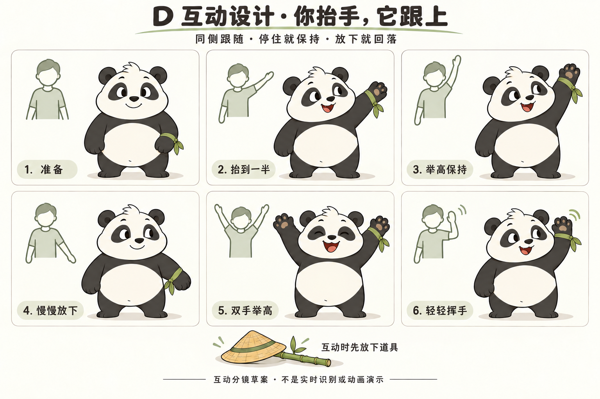
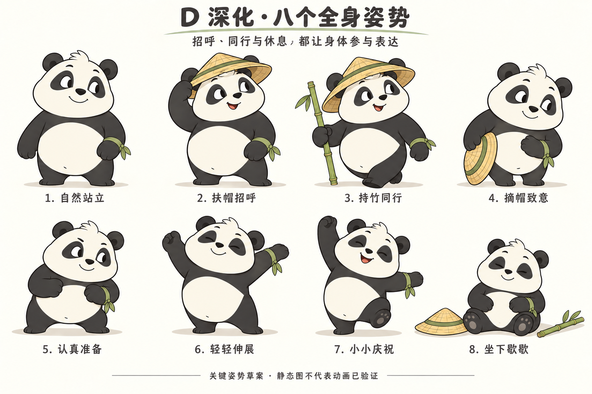
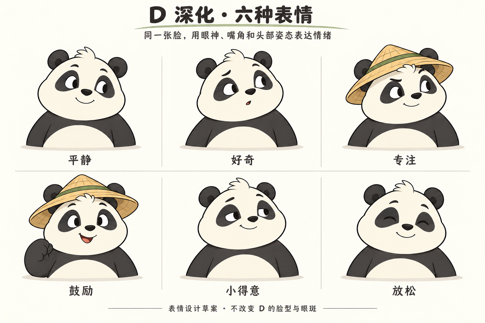
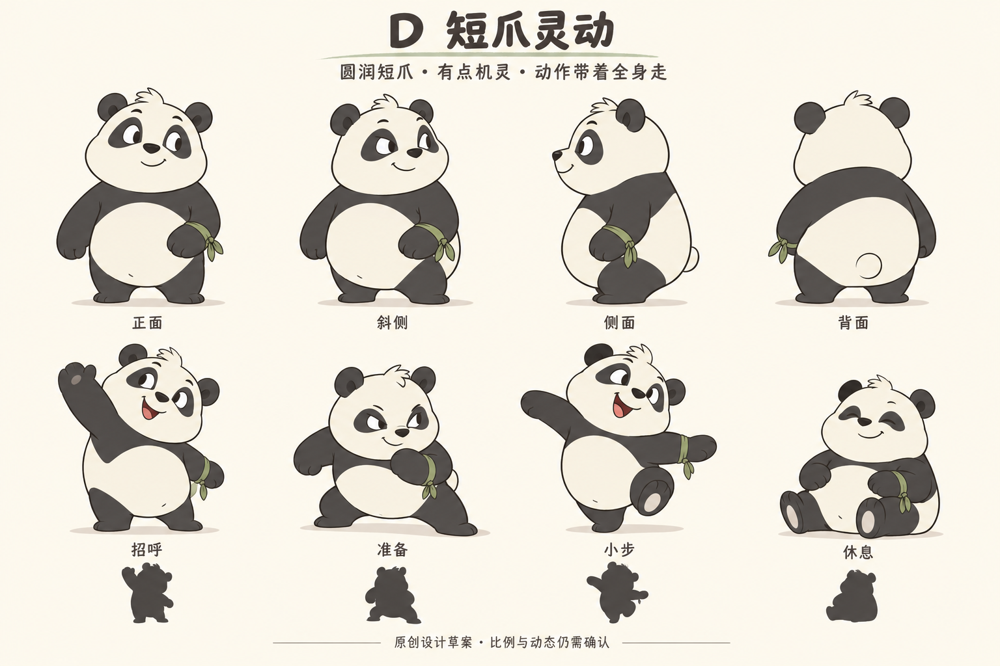

短爪圆身，动作放开
把已认可的形象、草帽竹子、表情、动作与抬手互动完整交给制作方。保持同一只 D，让身体、眼神和节奏一起参与表演。

七张设计原图
D2 定本体和道具，D3 定表演峰值，D4 定互动行为。点击图片查看原尺寸。













D 熊猫 IP 完整设计交付包
2026-10-08。供 Gym 项目窗口接手角色资产制作与实现。用户已选择 D 短爪灵动形象，认可草帽竹子方向，并要求更活泼的大幅动作、夸张表情和抬手互动。
本包汇总当前设计成果：7 张原尺寸设计图、形象规范、完整动作编排、互动规则、制作顺序、验收标准和可直接转交的项目提示词。动态部分是关键姿势、分镜与制作规范；尚没有本角色的连续动画、可绑定模型、分层源文件或精灵序列。 项目窗口需要据此制作，并交付实际运行效果。
转交方法
同一个 E 盘项目窗口：发送 PROJECT-PROMPT.md 的完整内容即可，提示词内包含本包绝对路径。也可附上 ZIP，避免另一窗口只能读到文字。
其他电脑或工作区：先解压整个 ZIP，再发送 PROJECT-PROMPT.md，并告知实际解压目录。图片与文件之间采用相对链接，解压后保留目录结构。
人先看 START-HERE.html，可离线浏览七张图及全部核心说明；制作方按下表阅读。
| 顺序 | 文件 | 用途 |
|---|---|---|
| 1 | 项目实施提示词 | 可直接粘贴给代码窗口的完整任务 |
| 2 | 形象与道具规范 | 保持同一只熊猫，明确哪些细节不能漂移 |
| 3 | 动态与表情规范 | 动作库、节拍、过渡与避免僵硬的要求 |
| 4 | 抬手互动规范 | 跟随、保持、下降、左右映射与道具切换 |
| 5 | 制作与验收 | 制作顺序、最小样片、最终证据和交付清单 |
| 6 | 研究案例 | 参考来源与借鉴范围 |
| 7 | 素材出处 | 原图与生成记录用途 |
| 8 | 文件清单 | 每个文件的大小与 SHA-256 校验值 |
哪些已经确定
| 项目 | 当前状态 |
|---|---|
| D 为唯一主方向，短爪、圆身、略机灵的熊猫 | 用户已选择并认可 |
| 草帽、竹子作为少量可移除道具 | 用户明确要求；整体形象获认可 |
| 动作幅度更大、更活泼，表情更夸张 | 用户明确要求；D3 形象获认可 |
| 深化抬手等互动 | 用户明确要求 |
| 实时手臂跟随加表情回应作为主体验 | D4 推荐方案，用户尚未逐项选择模式 |
| 精确比例、色值、时长、映射阈值、资产工艺 | 制作起点或待验证参数 |
| 动画流畅度、相机效果、手机性能、像素可读性 | 仍需制作和实测 |
七张图如何使用
| 文件 | 负责约束的内容 |
|---|---|
| D1-character-turnaround.png | 初始身份、侧背轮廓；概念转面，不能当作精确正交工程图 |
| D2-character-accessories.png | 本体主基准、草帽、竹子与握持 |
| D2-expressions.png | 六种常态表情 |
| D2-key-poses.png | 八种常态与道具关键姿势 |
| D3-movement.png | 大幅动作强度、身体形变和动作峰值 |
| D3-expressions.png | 六种夸张表情 |
| D4-hand-interaction.png | 六格手臂互动、方向与道具放置 |
D1 至 D4 是同一角色的设计阶段，不是四只熊猫，也不是软件版本。不能简单让最后一张图覆盖所有设计：本体与道具看 D2，表演峰值看 D3，实时互动看 D4。 单侧腕结等一致性规则以本包文字规范为准，修正生成图的局部误差。
A/B/C、修正前图稿、旧项目角色及旧录像不作为本包制作标准。本包未打包任何旧录像来冒充 D 的动画。
角色暂称 D 熊猫，正式名字与声音尚未设定。打包行为不包含向其他窗口发消息或修改产品代码。
D 熊猫形象与道具规范
目标是复现用户认可的短爪熊猫，而后让它自然地动起来。角色给人的感觉应当是圆润、机灵、亲近，有一点俏皮，既能活跃回应，也能安静陪伴。
本体不能丢失的特征
| 部位 | 应保持的设计 | 制作时检查 |
|---|---|---|
| 头与面颊 | 奶白、略方而圆润的脸，饱满面颊，短口鼻 | 侧转仍有面颊与口鼻层次，不能变成一个正圆贴五官 |
| 额头与耳朵 | 小毛簇、两只炭黑圆耳 | 毛簇方向和耳根固定；帽子与耳朵有正确前后关系 |
| 眼睛与眼斑 | 叶形或豆形深色眼斑，眼白、瞳孔、眼睑可表达视线 | 不永久放大为玻璃球大眼；左右透视变化仍像同一张脸 |
| 鼻与嘴 | 小黑鼻、短吻、可闭口也可张口笑 | 不换成旧参考的红鼻头，不随嘴张开改变身份 |
| 胸腹与背 | 紧凑梨形或豆形圆身，奶白腹部，炭黑肩背 | 白肚贴合身体，随压缩和扭转变化，不能像悬浮护甲 |
| 前爪 | 短厚、柔软、简化熊掌 | 肩根、肘部连续，张开、松弛、握持有不同轮廓 |
| 后爪 | 短、能承重，有可读脚掌朝向 | 不能拉成人形长腿，落地不能只靠脚尖插在地面 |
| 尾巴 | 小而简洁，位于背面正确位置 | 随躯干运动，不增加额外尾巴或白色残影 |
| 绿色腕结 | 仅在熊猫自身左腕 | 正面时位于观众右侧；转身后随左腕走，不固定屏幕位置 |
去掉所有道具仍须认出 D。不能依赖帽子来掩盖脸型、比例或眼斑偏差。
比例与转面
约两头身是已有草图的起点，最终轮廓以 D2 空手主图为主要依据。不要重新采用旧方案中的 2.5 至 3 头身、可见人形肩膀、机械肘或长腿要求。
D1 包含正面、斜侧、侧面和背面意向，但并非精确正交图。制作前应在同一身高基线下统一正面、左右斜侧、侧面与背面，固定头宽、腹部宽、耳根、肩根、腕结及帽子安装位置。左右不能只翻转成带两个腕结的近似图。
先用轮廓与大色块核对站姿，再检查抬爪中段、举高、下蹲、坐姿和回望。动作可以压缩和伸展，但必须保持体积感；不是所有姿势共用一个永不变形的椭圆肚子。
表面与画风
以清晰二维卡通主稿为外观标准：暖深色轮廓、奶白和炭黑主色、少量克制阴影。保持柔软连续的形体，不添加写实毛发、强反光塑料、复杂衣服或密集纹理。
现有项目入口使用 Canvas 2D；这只是当前技术状态。可继续以可编辑曲线和形变制作，或在必要时采用其他资产方式，但不得为了迁就工具改变角色。若以后确需三维，应以同一视角对照这些主稿，保持哑光卡通与平面轮廓，单独说明三维视角的验证范围。
以下为沿用的工作色建议，未经取样锁色，允许为实际显示做小幅统一：
| 区域 | 工作色 |
|---|---|
| 脸与腹部 | 暖奶白 #F3EBD7 |
| 耳、眼斑、四肢 | 炭黑 #343334 |
| 草帽 | 麦秆黄 #D9B46A |
| 竹子、帽带、腕结 | 柔和竹绿 #81945A |
| 设计展示背景 | 暖纸白 #FBF8EF |
产品背景不必做成纸张；这些 PNG 带纸色背景与标题，是设计板，不能整张贴进产品里作为活动角色。
道具设计
草帽使用浅帽冠、麦秆色、绿色帽带。帽檐稍宽于头，前檐抬起，不遮挡眉眼。用少量编织线表达材质；佩戴、扶帽、摘帽和放地面均是同一顶帽。
竹子是细绿竹，带少量竹节和一簇小叶。建议从含帽身高约七成的长度起步，制作时根据主图统一。由熊猫自身右爪握持，位置在身体外侧；爪上、爪下竹身连续，靠地时底端与地面一致。竹子用于同行和陪伴，不扩展为武器或识别到的健身器械。
左右定义始终以熊猫自身为准。正面时：观众左侧是持竹的右爪，观众右侧是带绿色腕结的左爪。
| 场景 | 帽子 | 竹子 | 腕结 |
|---|---|---|---|
| 日常展示 | 可戴或摘 | 可持或放旁边 | 自身左腕 |
| 扶帽招呼 | 戴着，右爪触帽檐 | 放旁边，释放右爪 | 自身左腕 |
| 大幅招呼 | 可戴或摘，双爪空闲 | 放旁边 | 自身左腕 |
| 持竹同行 | 戴着 | 自身右爪持握 | 自身左腕 |
| 摘帽致意或回望 | 右爪持帽，按动作需要 | 先放旁边 | 自身左腕 |
| 跳跃、落地、明显伸展 | 放旁边 | 放旁边 | 自身左腕 |
| 实时抬手跟随 | 放旁边 | 放旁边 | 自身左腕 |
抓取、放下、摘戴须有明确接触点和状态衔接。不能为了切换动作让道具凭空消失、突然换手、穿过头部或漂在掌外。若需要快速进入互动，可跳过准备表演并切到明确的空手准备状态，不把跳过期间标成正在同步。
表情身份
D2 六种常态表情与 D3 六种峰值表情共用同一头部基准。眉、眼睑、视线、嘴与头倾协作；不能只换嘴，不能每种表情换一张脸。完整分工见 动态规范。
清晰版与像素版
用户喜欢像素风，清晰版用于校对母稿。两种显示必须共用同一个角色和动作状态。像素显示不能变成另一个熊猫，也不能遮掩眼神、手爪与身体粘连的问题。
早期可用 64、96、128 像素角色高度对照，这只是探索尺寸。比较同一姿势、同一时刻与实际界面尺寸，关注眼斑、嘴型、举手留白、脚底和腕结。静态可读后再看运动中的边缘闪烁与颜色跳动；不以加模糊消除设计问题。
制作一致性优先级
用户明确偏好与本包规范优先；D2 定本体与道具，D3 定表演强度，D4 定互动行为。图上的偶发毛簇、腕结、掌垫或遮挡差异应在统一稿中修正，而非全部复制。保持角色识别的同时，按动作需要重绘和变形。
本轮交付包含完整视觉方向，但不含精确分层、拓扑、绑定或正交尺寸。制作方应补齐可编辑资产与统一转面，不能把概念图本身当作已经完成的绑定资产。
D 熊猫动作、表情与互动制作规范
日期：2026-10-08。本文面向后续角色、美术与动画制作者，整理已认可的 D 形象与活泼表演方向，并补充制作时需要的动态规则。
用户已认可整体形象，并明确要求动作幅度更大、更灵活活泼、表情更夸张。常态以 D2 为基础，显著反应与表演峰值以 D3 为基础。不能以“稳定”“省制作量”为由退回身体直立、四肢小幅转动的僵硬表现。
本文列出的时长、节拍、分层和动态处理方法，是为后续制作补充的建议参数，尚未经过用户逐项认可，也未通过实际播放验证。先按这些参数制作可播放样片，再根据视觉效果调整。它们不是用户的运动要求、摄像头延迟指标或健身动作标准。
1. 素材依据与证据边界
| 素材 | 用途 |
|---|---|
| D2 主形象与道具 | 本体比例、戴帽/空手/持竹的角色身份，以及配件关系 |
| D2 六种常态表情 | 平静到轻度情绪的面部基准 |
| D2 八个全身姿势 | 常态姿态、道具使用、动作起止状态 |
| D3 大幅动作关键态 | 重心起落、压缩与打开、扭转和大幅度剪影 |
| D3 六种峰值表情 | 明显情绪反应时的眼眉、嘴、头和上身变化 |
| D4 抬手互动分镜 | 连续抬手、保持、下降及角色回应的交互意图 |
以上均为静态设计 PNG。D2 姿势图、D3 关键态图和 D4 分镜不是已播放的动画，不是等间隔序列帧，也不证明骨骼、摄像头或运行性能已验证。尤其不能把 D3 上排三图机械插值后直接宣布跳跃制作完成。
静态稿内的局部绘制差异，需在同一角色模型或统一二维母稿上校准；不能据此让每个动作使用不同的头身、掌形或道具尺寸。本文不要求为追随某格绘图误差而破坏完整角色的一致性。
2. 一只角色，两档表演强度
2.1 保持 D 的身份
- 保留圆润而略方的奶白面颊、短口鼻、小黑鼻、圆耳、额前毛簇、梨形圆腹和短厚熊掌。
- 活泼来自全身配合：视线带动头，肩胸与髋部形成方向差，支撑脚承重，空闲爪负责平衡。不要通过永久拉长手脚或缩小腹部变成另一只熊猫。
- 绿色腕结只在熊猫自身左腕。转面、镜像画面或抬不同的手，均不得使腕结换边或复制到双腕。
- 常态与峰值使用同一个本体、同一顶草帽、同一根竹子。配件不随某个表情改形、改色或改大小。
2.2 大动作与安静状态都要成立
常态是有注意力的轻松状态；峰值是带明确意图的显著动作。两者的反差让角色有生命，不能把所有动作做成同一幅度、同一速度的循环。
| 表演层次 | 适用内容 | 幅度要求 |
|---|---|---|
| 安静常态 | 自然站立、观察、坐下休息 | 允许稳定停住；有视线、眨眼和轻微呼吸即可，不持续扭腰摇摆 |
| 日常参与 | 扶帽、摘帽、同行、轻伸展、小小庆祝 | 头、胸腹与脚参与；姿势应明显可读，不能只有爪尖或脖子在动 |
| 活力峰值 | 大幅招呼、明显惊喜、庆祝跳跃 | 肢体打开、躯干倾斜、重心高低与表情均应接近 D3 的放开程度 |
不能为了避免僵硬而让整个角色始终上下弹动。也不能为了避免吵闹，把 D3 的高举爪、低蓄势和清楚腾空缩成微小摆幅。
3. D2 的八个常态姿势
这八项是角色动作库的姿态基础。它们需要与 D3 连成同一个角色的表演范围；“常态”不代表可以省略全身重心。
| 编号与姿势 | 身体与支撑 | 表情与视线 | 道具与制作检查 |
|---|---|---|---|
| P01 自然站立 | 双脚稳定承重，胸腹自然堆叠，肩略松，短爪垂在腹部外侧；可有轻微左右不对称 | 平静，注意前方；不一直大笑 | 空手、无帽，作为比例与默认结束姿势；掌不穿腹部 |
| P02 扶帽招呼 | 身体朝来者轻倾，另一侧脚与爪配合平衡；右爪沿外侧弧线触帽檐 | 先看见来者，再展开笑容 | 戴帽、无竹；右爪与帽檐接触后共同移动，不能仅因爪子靠近帽檐就算接触 |
| P03 持竹同行 | 有前后步幅、承重转移与肩胯反向转动；落脚时身体随支撑前移 | 轻松机灵，可短暂看向同行者 | 戴帽，自身右爪握竹，竹子位于身体外侧；自身左腕保留腕结 |
| P04 摘帽致意 | 胸腹一起前倾，髋略后移保持平衡，回正有收稳 | 温和、礼貌而俏皮，目光保持交流 | 右爪拿帽、无竹；帽子从头顶连续离开，不能穿过耳根或瞬间出现在手里 |
| P05 认真准备 | 脚距适当打开，膝髋降低，短爪靠近身体，胸部略前探 | 专注、自信，眉眼集中而不愤怒 | 空手、无帽；与 D3 深蓄势相比压低程度较小，仍有清楚准备意图 |
| P06 轻轻伸展 | 躯干、头和短爪共同延展，可侧倾；支撑脚稳定，另一侧腿作平衡 | 专注转为舒展，结束呼气 | 空手、无帽；不得靠肘反折或拉长前臂实现“够得远” |
| P07 小小庆祝 | 一爪上举，胸部打开，重心侧移，一脚仍承担支撑 | 开心或短暂小得意 | 空手、无帽；这是日常庆祝，和双脚腾空的大欢呼有清楚区别 |
| P08 坐下歇歇 | 先弯膝降低，再让臀部接地，腹部自然压低，脚掌朝前；不能直立身体整体下移穿地 | 由呼气转为放松，肩和眼睑一起松下 | 帽与竹已放在固定地面区域；坐下时不踢穿道具，起身时有撑起和重心前移 |
4. D3 的六个大幅关键态
**K01、K02、K03 属于同一个“庆祝跳跃”动作的蓄势、腾空、落地三个关键态，不是三个独立动作。**它们之间必须补足蹬地、离地、经过最高点、下降、首次接触和恢复站立等过程。
| 关键态 | 必须保留的可见变化 | 动态连续性要求 |
|---|---|---|
| K01 压低蓄势 | 膝髋和圆腹明显降低，身体更宽更紧凑，爪后收，双脚准备发力 | 下压有意图，重心保持在可支撑范围；到最低处有短促蓄力感，不长时间僵停 |
| K02 跃起欢呼 | 双脚明显离地，两爪不对称打开，胸口上提，露出脚掌，大开口笑；保留圆润体积 | 由脚蹬地带起身体，重心沿连续轨迹运动；最高点停留感来自速度变化，不能悬停后突然下坠 |
| K03 柔软落地 | 膝髋、圆腹共同吸收接地，爪展开平衡，身体压低，头稍滞后 | 足底接触后不滑行；压缩后恢复并收稳，不接上无休止的小弹跳 |
| K04 大幅招呼 | 一爪越过头顶打开，另一爪反向平衡，躯干侧倾，头与胸同向响应，笑容明显 | 爪沿弧线挥动，肩根带动上臂与前臂；脚帮助调节重心，不能只靠肩关节反复转动 |
| K05 轻快大步 | 前后脚拉开，前脚方向可读，后脚蹬离，身体前移，肩胯存在方向差 | 清楚经过接触、承重、经过支撑脚、蹬离；不能像坐着踢腿，也不能脚在走身体不前进 |
| K06 转身回望 | 脚与髋保留行进方向，胸肩与头回转，目光邀请，帽子拿在侧面 | 先减速或停步，再转胸肩和头；脚可小幅转轴，避免脚钉死而腰颈超范围扭转 |
动作区分来自完整剪影和重心变化。遮住脸后也应能看出招呼、准备、欢呼、落地和邀请；把所有动作缩到小尺寸后仍应互相可辨。
5. 十二种表情：六种常态与六种峰值
这十二种是表演设计范围，不能把十二张独立头像当作精确面部变形数据。应在统一头部上制作连续变化。表情强度来自眼睑、眉、嘴、面颊、头倾和肩部的配合；眼斑形状、小黑鼻与短口鼻保持身份一致。
5.1 D2 六种常态
| 表情 | 可见设计 | 使用与限制 |
|---|---|---|
| E01 平静 | 眼睛自然打开，嘴角轻抬，肩颈放松 | 待机、结束动作；不是毫无注意力的呆脸 |
| E02 好奇 | 视线先转向目标，眉略抬，头轻歪，嘴稍张或轻闭 | 注意到人或道具；不要每次都演成惊吓 |
| E03 专注 | 眉眼略收、下巴微低，嘴收拢 | 准备、伸展；不皱成愤怒或责备 |
| E04 鼓励 | 眼神柔和，笑嘴展开，头稍朝向对象，胸部略打开 | 招呼或动作后的回应；不代表系统判定动作正确 |
| E05 小得意 | 一侧眉略高，笑嘴轻微不对称，头肩有很小方向差 | 小小庆祝；不能演成轻蔑 |
| E06 放松 | 眼睑和眉舒展，嘴自然，头肩一起松下来 | 待机与坐下休息；避免长期无精打采 |
5.2 D3 六种峰值
| 表情 | 相比常态的增强 | 身体配合与收势 |
|---|---|---|
| E07 开怀大笑 | 双眼弯起、面颊上提、嘴明显打开，可露少量舌头 | 头与胸上提或后倾；峰值后回到小笑，不长期保持巨大开口 |
| E08 哇，惊喜 | 眉眼显著上抬，眼睛睁圆，嘴成 O 形 | 短爪和上身一起回应；从惊喜接开心，不突然切到另一张脸 |
| E09 认真蓄势 | 眉眼更集中，下巴略压低，保留机灵笑意 | 肩胸与重心一起收紧；用于明显准备，不用于跟踪丢失或用户失败 |
| E10 调皮眨眼 | 一眼闭合，另一眼保持交流，笑嘴打开，头明显倾斜 | 单侧肩轻参与；眨眼后恢复双眼，不能眼斑跟着翻面 |
| E11 得意一下 | 半闭眼、不对称笑嘴、头肩高低差更加明确 | 轻扬下巴或开胸后收回；不能变成傲慢、挑衅或永久侧脸 |
| E12 呼，放松 | 眼睑下降、嘴轻呼气、肩颈明显松下来 | 与大动作后的释放对应，随后进入 E06；不做昏倒或脱力表现 |
表情可以先于或略晚于身体峰值，避免眼、嘴、头、肩在同一时刻齐刷刷开关。允许短暂眼神转移和眨眼，但不随机频繁切表情。表情响应不是对用户情绪的识别结论。
6. 十一类动画的节拍制作起点
以下建议时长包含动作起势、主体动作与收势，均为首次样片编排起点，允许根据实际播放修改。重点是可读的意图、清楚峰值和自然落定，不能为了严格对齐秒数牺牲姿态。静态关键图不能提供最终动画时长。
| 动画 | 建议首次样片时长 | 节拍与必须观察的过程 |
|---|---|---|
| 待机 | 约 5–8 秒可循环片段 | 稳定站立为主 → 一次小幅视线转移或眨眼 → 轻呼吸 → 回到兼容起点。呼吸主要体现在胸腹，不让脚跟着漂移；循环接缝不抽动。少量变体之间允许真正安静的间隔 |
| 扶帽招呼 | 约 2–3 秒 | 看见来者 → 胸头倾向来者、右爪沿弧线上移 → 触帽檐、小幅压/抬帽檐并展开笑容 → 松开、爪回落 → 身体收稳。触帽有明确接触段，前后不是一条等速往返 |
| 摘帽致意 | 约 2.5–4 秒 | 右爪接近并抓住帽檐 → 帽子先离开耳朵与头顶 → 胸腹轻前倾、帽子移到侧前方 → 目光交流与短暂停留 → 回正。若结尾要重新戴帽，另给完整放回过程，不在末帧瞬移 |
| 大幅招呼 | 约 2.5–4 秒 | 注意对象并轻蓄势 → 躯干侧倾、爪举过头顶 → 1–2 次明显弧线挥动，另一爪与脚配合 → 动作幅度自然收小 → 回到稳定站立。峰值必须保留 D3 的打开程度；次数是建议，不需要一直循环挥舞 |
| 持竹走 | 约 1.2–1.8 秒一个左右完整步态周期 | 起步重心前移 → 前脚接触与承重 → 后脚蹬离 → 交换支撑 → 周期闭合。右爪保持握竹，左爪与躯干有自然反摆；另做开始与停止，不把完整速度直接开关。步幅应清楚，不缩成原地碎步 |
| 转身回望 | 约 2–3 秒 | 行走减速/停步 → 视线发现后方对象 → 胸肩、头与支撑脚协同转向 → 回望邀请短停 → 回正或迈步离开。无竹版本可右爪持摘下的帽子，另一爪轻作邀请；两个结束分支分别验证 |
| 轻伸展 | 约 3–5 秒单侧 | 站稳并调整脚距 → 爪、胸、头共同伸展/侧倾 → 在清楚而舒适的姿态停留 → 呼气与回正 → 收脚恢复。另一侧作为独立连续变体；这是角色表演，不作为专业运动示范 |
| 休息 | 约 3–5 秒进入，另做稳定休息循环和起身段 | 先处理道具 → 重心降低、膝髋弯曲 → 臀部接地、脚掌向前 → 肩眼一起松下。稳定坐姿可轻呼吸或观察。起身先把重心带到脚上，再推起，不能倒放坐下片段就默认合格 |
| 欢呼 | 约 2–3.5 秒一次完整动作 | D3 压低蓄势 → 蹬地与张开 → 双脚离地并开怀笑 → 最高点转为下降 → 脚接触、膝髋圆腹压缩 → 恢复收稳。蓄势与落地要有明显反差，腾空不能被省略；不连续自动弹跳 |
| 鼓励 | 约 1–2 秒一次回应 | 看向用户 → 小点头或短暂抬爪 → 温和笑容停留 → 恢复注意。头与胸有小幅配合，不能只有嘴角切换；不代表动作评分或训练完成 |
| 小小庆祝 | 约 1.5–2.5 秒一次回应 | 轻收重心 → 一爪上举、胸腹打开 → 开心或小得意短停 → 还原站姿。一脚仍承担支撑，与 D3 双脚腾空的欢呼形成层次 |
最小样片统一采用“单臂抬起保持放下、扶帽招呼、完整欢呼”三条，见 PRODUCTION-AND-ACCEPTANCE.md。随后扩展大幅招呼，并用多个持竹走周期检查足底滑动和握持。样片顺序是制作建议，不是用户新设的审批阶段。
7. 让动作柔软而有重量的制作规则
7.1 足底与重心
- 先标出每段由哪只脚承重、何时换脚、何时双脚离地。接触地面的脚在承重期间不应被躯干运动拖着滑行。
- 行走的前脚接触、身体经过支撑脚、后脚蹬离必须分别存在。前脚抬起露脚掌不等于它已经承重。
- 站立倾身时，髋部、空闲爪或脚距应帮助平衡；避免身体几乎横倒而双脚仍机械固定。
- 跳跃用同一条连续的重心轨迹连接蓄势、离地、最高点、下降与落地。落地需要膝髋参与，不能只有头上下弹。
- 坐下有臀部接触，起身有重心前移。道具、地面阴影与身体必须共同说明接触关系。
7.2 弧线、速度与动作接续
- 招呼、摘帽和回望的手爪、头与道具沿清楚弧线运行；不要在两点之间直线漂移，也不要用同一均匀速度走完整段。
- 起势表达准备，主体动作充分打开，停顿让意图被读到，收势负责回稳。全身不同时启动和停止：视线可领先，头肩随后，软组织和道具细节略滞后。
- “滞后”应服务接触与重量。不能因为加了拖尾，使手已放开帽子仍悬在手边，或脚已接地身体继续无约束下沉。
- 让左右爪、两脚、肩与髋有合理差异；只有明确的双侧动作才对称。避免每格都是双臂同高、双膝同角、脸正对镜头。
7.3 压缩、伸展与恢复
- 蓄势和落地允许圆腹与整体姿态明显压低，起跳和大幅招呼允许胸腹打开；保留圆润体积，不变成细长管状身体。
- 首轮优先用姿态、关节和体块关系实现变化。如使用局部形变，需检查头、腹部和四肢连接，避免整个模型简单等比压扁导致足底、眼睛和配件变形。
- 恢复有一次可读的回稳即可；不能每个动作结尾都叠加相同的多次弹簧振荡。
- 峰值短暂夸张，休息姿态恢复到 D2 的身份比例；不要在动画累计后越变越瘦、越长或越低。
8. 草帽、竹子与手爪的连续接触
8.1 草帽
帽子至少要区分戴在头上、被爪抓住、离头持有、放在地面四种关系。关系切换发生在可见的接触或释放时刻，位置、朝向和速度应连续。
扶帽时爪触到固定帽檐区域后，帽子可以小幅响应，不能像独立漂浮物持续摇摆。摘帽先解除与头的接触，再沿避开耳朵的轨迹移走；戴回先对准头顶，再落稳并松手。帽檐不可遮住主要眉眼，不穿头、爪或耳根。纹理无需高频细抖来体现编织感。
8.2 竹子
持竹默认由自身右爪包握，竹身在掌上与掌下连续可见，位于身体外侧；不得穿掌、横穿脸或遮挡圆腹主轮廓。握持点随手走，叶簇可以有很小后随，竹节位置不漂移。
竹子是同行道具，不当作武器或未经设计的健身器械。手持行走时不要求每步都以竹端敲地；若设计明确的倚地状态，竹端接地后必须保持对应接触，不能同一时刻既跟手大幅摆动又钉在地上。
8.3 道具切换与动作幅度
- 大幅招呼可戴帽或无帽，双爪不持道具；戴帽版本以 D3 图中关系为准，检查帽檐与高举爪的间距。竹子先放旁边，不与大挥爪叠加抢占空间。
- 本轮的伸展、欢呼、落地与实时跟随均采用空手无帽状态，与形象规范一致。放下动作完成后，道具留在固定位置，不能中途闪现、消失或复制。
- 同时拿帽和竹不是默认状态。需要同屏两件道具时，应明确各自接触对象及转移动作，避免为了保留装饰限制身体幅度。
- 腕结只作少量附随运动，其摆幅不能抢过手爪。小尺寸版本可简化飘带，但不能把腕结换到另一只手。
9. 姿势切换、暂停与减少动态
9.1 姿势之间有可行的路径
每个动作应明确开始姿势、结束姿势、脚底接触与道具状态。常见衔接包括：自然站立→扶帽→站立；持竹走→停步→回望→再走；空手站立→蓄势→欢呼→落地→站立；站立→坐下→休息→起身。
不能直接把站立关节值和坐姿关节值混合，就默认得到合理的坐下过程。对于脚已承重、爪握道具或臀部着地的片段，需要单独检查接触约束。跳跃途中若要换动作，应先完成可信落地，不能在空中忽然切成站立。
从任意姿势发起新动作时，先确认当前脚与道具关系，再选择兼容的连接姿势。衔接应短而清楚，不必每次长时间回到同一机械正面站姿。
9.2 暂停与恢复
自主表演暂停时保持当前姿势与道具接触，计时停止，不在暂停期间悄悄走完动作。恢复后从暂停进度继续，不跳帧补播放。调试预览允许停在空中查看关键态，但产品中的“结束表演”应与“暂停检查”区分，可在合理时机收势或完成落地。
实时跟随的停止不是播放暂停：应明确停止跟随并处理相机/输入状态，角色进入稳定休息；恢复时接入当前有效姿势，不补放暂停期间的用户动作。界面隐藏、退出和中断的技术资源处理由实现层另行验证，不能用角色仍在动证明相机仍正常。
9.3 减少动态
默认遵循系统减少动态偏好，并允许用户明确调整。减少动态模式应提供较少次挥爪、无跳跃的开心姿势、更短的过渡与安静待机，避免大幅循环位移或屏幕抖动；不改变正常模式已经认可的大幅度设计。
减少动态不能取消必要状态表达：开始、暂停、结束、看不清仍需清楚呈现。实时跟随若保留，必须明确是否仍由用户动作控制；不能悄悄把真实抬手改成自动小摆动。
10. D4 实时跟随的边界
实时跟随的目标是“我怎么抬，它就怎么抬”。自主表演的目标是“它用自己的动作回应我”。两者需要明确模式，同一时刻不能由两套逻辑争夺手臂或身体。
- 跟随前放下竹子、摘帽并露出眉眼与双爪，实时跟随采用空手无帽状态。准备段可以跳过，但跳过后角色和道具应处于一致的结束状态；未准备好不标成正在跟随。
- 短爪映射人体手臂时保留方向、抬起程度和弯肘关系，不强求熊掌到达人类手腕的绝对位置。自然垂下、刚抬起、中段、最高点、下降中段和回到自然姿态均需连续可读。
- 用户在任意中段停住，角色也能停住；用户下降，角色及时下降。不能一检测到抬手就播完整举高，也不能在用户保持时自行挥爪。
- 左右臂分别由各自有效输入控制，双臂不强制同步。按 D4 的镜子式画面关系仅处理一次镜像变换，并用左手、右手、双手实际验证。角色自身左腕结固定不变。
- 眼神、眉与笑容允许温和独立回应，但不能用自动后仰、蓄势、跳跃和侧倾冒充用户动作。缺少可靠下肢输入时，脚保持稳定。
- D3 的大幅欢呼与挥爪属于自主表演，不自动放大实时输入，也不因一次普通抬手而抢走控制。完整欢呼由明确的表演入口或另行确认的互动规则触发。
- 举高手臂时可短暂开心，随后回到小笑；不要求持续张口大笑。角色表情不等于识别到了用户的情绪。
- 肩、肘、腕输入只能支持相应手臂姿态，不能据此声称识别了熊掌开合、手指或完整手势。跟随也不等于动作评分、纠错、计次或训练完成。
- 单侧看不清时，暂停受影响链；整个人或肩部不可用时，暂停相应身体驱动。持续丢失可回休息姿势，但必须清楚表示暂停，不能以自动表演掩盖失去输入。
- 恢复时丢弃过期输入，平顺接入当前可靠姿态，不排队补播旧动作。具体稳定条件、可信度门槛和时限应在实现后验证，静态分镜没有提供这些指标。
D4 提出的约 8–12 秒“自然站立→单手抬起→中途保持→举高保持→放下→回到轻松”适合作为演示编排起点；这不是要求用户每次按相同时长运动，更不是相机延迟承诺。双手、挥动、遮挡与恢复需要另做验证。
11. 后续动画交付应如何证明完成
本交接包提供静态美术依据和动态制作要求，不宣称动画已经完成。后续至少应交付可实际播放的样片及对应可编辑源文件，说明采用的角色版本、动作名称、正常/减少动态模式和仍待改进的问题。
审看时先用清晰显示检查形体、脚底、接触与表情，再用同一姿势和节奏检查像素呈现。像素颗粒不能作为遮盖穿模、关节突变或足底滑动的方法。
逐项观察：
- 正常模式的峰值是否达到 D3 的打开程度，而非再次缩成小摆动。
- 六个大幅关键态能否凭剪影与重心互相区分，完整跳跃是否包含蓄势、起落、接触与收稳。
- 头、胸腹、髋与脚是否参与动作，是否仍保留短爪圆身的 D 身份。
- 十二种表情是否来自同一张脸，常态与峰值能否平顺转换。
- 承重脚、坐下臀部、扶帽爪与握竹爪是否具有连续可信的接触，是否存在穿模、滑动或瞬移。
- 道具放下、恢复、跳过准备、暂停和恢复是否保持位置与数量一致。
- 动作循环、停止与跨姿势衔接是否自然，是否出现统一速度、统一弹簧或突跳。
- 实时跟随是否能停在任意中段，是否保留左右差异，并与自主招呼、跳跃严格分开。
真实摄像头验证、预设动画播放、人工拖动关节和静态图片展示必须分别标注。没有摄像头实测，不报告真实跟随完成；没有可播放样片，不报告动画自然度通过。
D 熊猫抬手互动规范
推荐主体验为“手臂跟随你，眼神和表情回应你”。用户已要求深化抬手互动；这套实时跟随模式是 D4 设计建议，尚未代表用户在多个互动模式间完成最终选择。可先按此制作可验证样例，并清楚标注采用的假设。
进入和退出
用户主动进入“一起动”，了解相机用途并点击开启后才启动。普通角色展示和预设表演无需相机。角色在准备状态放竹、摘帽、看向用户，准备动画可跳过；模型或相机未就绪时清楚显示“准备中”。
拿到可靠输入后进入跟随。用户结束时停止相机与跟随，再恢复日常状态。页面隐藏、退出、画布失败和跟随异常的释放行为应沿用并复核现有产品处理；恢复画面不自动重开相机。
相机不可用时可以看普通表演，但预设动作必须标明为演示，不显示“正在跟随”。
六种互动行为
| 用户行为 | 手臂与身体 | 表情回应 |
|---|---|---|
| 准备 | 空手站稳，两爪自然放松 | 看向用户，温和注意 |
| 单手抬到一半 | 对应画面侧连续抬起，任意中段可停 | 短暂看向爪，再看回用户 |
| 举高保持 | 保留当前手臂高度与弯曲，不自动补动作 | 开心峰值后转小笑，允许眨眼 |
| 放下手臂 | 跟随当前有效输入下降 | 放松，恢复平静 |
| 双手举高 | 两臂独立，保留先后与高度差 | 可短暂更开心，不自动跳起 |
| 挥动手臂 | 跟随前臂和腕位置往返，保持用户节奏 | 更明亮的笑与注意力 |
连续性是关键：开始、停住、重新移动、放下都必须对应当前输入。“一检测到抬手就播完一次举高”不满足本设计。举高保持也不自动触发挥爪、跳跃、后仰、计次或训练完成。
表情是角色表演，不表示识别了人的情绪。若输入只有肩、肘、腕，最多说明手臂位置跟随，不能宣称识别了手指、手掌开合或精确腕部旋转。
短爪映射
保持短爪圆身。按抬起程度、弯肘程度与方向映射到角色可读姿态，不追求熊掌与人的腕点在画面绝对重合。
至少检查自然垂下、起抬、中段、举高、下降中段、归位，并加入反向和中段暂停。肩根轮廓连续，抬臂时爪与脸留出空隙，不反折、拉成人形长臂或穿进白肚。
跟随期间身体主动作只来自可靠输入。没有可靠下肢输入时脚稳定；不要为了显得可爱给人体输入加虚构蓄势、自动侧倾或跳跃。适量形态修正可以帮助轮廓连续，但不能改变动作意图和方向。
滤波服务于减少噪声，需要同时测量延迟；不为“柔软”而排队播放旧帧，也不把作者动画中的延迟、蓄势和惯性原样套到输入控制手臂。
左右对应
默认镜子式体验，以用户看到的镜像预览画面为准：
| 用户动作 | 镜像预览中的位置 | 正面熊猫执行 |
|---|---|---|
| 抬自己的右手 | 画面右侧 | 熊猫自身左爪，带绿色腕结 |
| 抬自己的左手 | 画面左侧 | 熊猫自身右爪，不带腕结 |
| 双手抬起 | 左右各自可见 | 两臂分别对应，保留差异 |
镜像变换只应用一次。人物解剖左右、模型输出左右和显示左右不能混用。绿色腕结始终挂在熊猫自身左腕，不随识别到哪只手而换边。进入跟随采用正面固定观察，先验证这一范围再考虑其他朝向。
身体控制与表演
| 模式 | 身体控制来源 | 可以额外做的事 |
|---|---|---|
| 角色表演 | 动画时间轴 | 大幅招呼、扶帽、回望、走路、蓄势跳跃与落地 |
| 一起动 | 当前可靠的用户输入 | 眼神、眨眼、眉嘴回应；不抢占手臂 |
| 丢失后恢复 | 明确标示的恢复过程 | 短暂保持，必要时缓慢回到休息位 |
| 已结束 | 普通角色状态 | 放松、恢复道具与常态 |
同一时刻只有一套身体主控制来源。进入跟随清除预设残留；退出后清除过期输入。完整欢呼或扶帽由明确的表演入口触发，不因一次普通举手突然开始。若未来采用“抬手触发一次趣味回应”，需作为独立模式说明，不把它标成逐帧模仿。
看不清时
| 情况 | 处理要求 |
|---|---|
| 单侧手臂被挡 | 只暂停受影响的链；另一侧仅在可靠时继续 |
| 肩或整个人离开画面 | 暂停相关驱动，不能继续声称正在同步 |
| 持续丢失 | 明确进入恢复状态，温和归位，不无限保持高举 |
| 重新出现 | 清除旧姿态队列，接到当前可靠姿态，避免突然甩臂 |
| 用户关闭或发生错误 | 停止相机，明确显示结束或不可用，不自动重开 |
“这只手暂时看不清”“回到画面里，我再跟你一起动”是可选中文文案。不用生气、惩罚或失败表情回应识别问题。
可信度阈值、丢失持续时限与延迟指标均需实现后测量，再写入交付记录。本包没有承诺某个毫秒数或所有设备流畅。
最先验证的片段
先制作约 8 至 12 秒的预设设计样片：空手准备 → 单手慢抬 → 中段停住 → 继续举高 → 保持 → 放下 → 平静。它证明角色的连续姿势与表情可成立，不证明相机跟随有效。
然后用真实输入检查左手、右手、双手不同步、挥动、中途反向、遮挡和恢复。真实相机测试由用户主动开启；无法完成时明确列为未测，不用模拟姿态冒充。
验收时同时展示输入与角色。用户停住后爪子不继续上升，放下后不多挥一次，双臂不被强制同步；静止手臂稳定但脸仍有注意力。
D 熊猫制作与验收要求
制作目标是把已认可的设计转换为可编辑、可运行、动作自然的同一只角色。先完成角色与短样片，再扩展动作库；工程检查通过与美术观感达标分别记录。
当前工程衔接
2026-10-08 打包时，项目 src/companion/PandaStage.tsx 调用 illustratedPanda.ts 的 Canvas 2D 绘制；CompanionLab.tsx 使用 characterMotion.ts 并保留预设与 mirror 模式。应由项目窗口重新核对当前文件，避免把这个快照当成未来不变的状态。
沿用现有独立角色实验入口，保留旧实现和验证记录供比较。不要继续用旧橙帽、红鼻、长肢或球体拼接形象代替 D。已有技术可复用，外观与表演必须以本包为目标。
不要为这次角色交付修改训练、饮食、热量公式、账号、云模型或识别评分。仓库规约仍适用，包括文档同步、localStorage 通过 store、日期和 API 密钥约定。部署、提交推送及向其他人发送内容不属于此提示词的默认要求。
制作顺序
- 统一角色资产。 根据 D2 空手主图统一转面、比例、色块和脸部；补齐抬臂、弯曲、握持、张掌、坐姿与道具接触。每个可变部位有稳定基准和左右归属。
- 复现关键姿势。 在实际渲染器中做自然站立、举手中段、举高、蓄势、欢呼峰值、落地、持竹走和回望，并与参考并排。轮廓偏离时先修形，不用堆动作掩盖。
- 制作最小连续样片。 完成单臂抬起停住放下、扶帽招呼、蓄势跳跃落地三条。体现短爪的连续形变、道具接触和明显大幅表演。它们是动画制作，不启动摄像头也可审看。
- 先验证有限抬手。 在最小样片后验证正面单臂的同侧映射、中段保持和放下，尽早发现短爪映射问题。相机由用户主动开启；没有设备或真人输入时继续软件与资产工作，并将真实镜像列为未测。
- 扩展完整动作与互动。 按动态规范制作常态、峰值、表情组合、切换与暂停，避免全部套成一个等长循环；同时扩展双臂独立、遮挡恢复与主控制切换。
- 验证像素显示与实际尺寸。 同角色、同姿势、同时间比较清晰和像素版本，再检查窄屏与小尺寸。
- 交付实际运行证据。 提供可运行入口、录像、同姿势截图、资产源文件、复现方法和仍未测的项目。继续修正发现的偏差，不以一次构建通过结束美术工作。
资产可采用适合当前项目的可编辑曲线、分层形变或其他工艺。需要明确表现头部、面部、胸腹、四肢、爪形、帽子、竹子、腕结及其前后关系。重叠区域随姿势调整，不能用一个永久遮挡顺序造成穿帮。程序化曲线本身也可以是源资产，但必须支持所需形变与表情，而不是几个刚性图元平移旋转。
这些 PNG 均为整张设计板，不是透明精灵、逐帧序列或可直接绑定素材。不得用设计板平移、缩放、旋转的录像作为完成动画，也不能把独立姿势硬切当作连续动作。
最小样片要求
| 样片 | 需要看到的过程 | 重点 |
|---|---|---|
| 单手抬起保持放下 | 自然 → 中段 → 停 → 举高 → 停 → 下降 → 归位 | 连续短爪、清楚留白、任意姿势可停；约 8 至 12 秒为编排建议 |
| 扶帽招呼 | 注意 → 抬爪 → 接触 → 扶帽 → 松手 → 归位 | 眼神有目标，帽子接触真实，头与身体有先后 |
| 欢呼跳跃 | 压低 → 蹬离 → 展开 → 下落 → 接地 → 压缩 → 收稳 | 大幅全身形变，有重量，落地后可以安静站住 |
同时提供正常速度和可暂停审查的展示。慢放只辅助看形变，不代替正常速度观感。单臂设计样片需明确标为预设演示；真实相机验证另行记录。
验收清单
| 范围 | 可观察的通过标准 | 不能接受 |
|---|---|---|
| 身份 | 空手、戴帽、举手、背面、坐姿仍认出 D | 回到旧角色；脸型、黑白关系随动作漂移 |
| 短爪 | 轮廓连续，中段和举高可读 | 胶囊插球、关节尖角、长人手、穿脸 |
| 重心 | 支撑与动作意图一致，脚掌接地可信 | 原地滑步、悬空、落地穿地、没有蹬离就飞起 |
| 身体 | 腹部、胸背和头部参与压缩、伸展与扭转 | 永久硬椭圆身体，只摆手脚 |
| 节奏 | 有起势、释放、可读峰值和收稳 | 全程匀速、全身同步震荡、收不住 |
| 表情 | 眉眼嘴与头倾协作，峰值后回常态 | 只换嘴、永久大笑、生气责备用户 |
| 道具 | 同一顶帽和竹，接触稳定，只在左腕有腕结 | 双腕结、换边、穿透、凭空消失 |
| 实时跟随 | 左右正确、任意中段可停、双臂独立 | 自动播完举高、保持时擅自挥爪或欢呼 |
| 跟踪丢失 | 状态明确，不排队旧输入，恢复可控 | 无输入还标同步、恢复甩臂、相机自动重开 |
| 显示 | 清晰与像素同状态，小尺寸有眼神和留白 | 用像素掩盖错误、切换显示造成动作重启 |
| 播放控制 | 暂停冻结身体、表情、道具与时间轴；恢复连续 | 暂停后还眨眼或帽子还动 |
| 减少动态 | 遵循系统偏好，普通待机不持续大动作；主动表演可控 | 自动无限跳跃、必须看完动画才能互动 |
| 工程 | 构建与相关回归通过，独立入口可用 | 破坏主产品、测试画面替代实际渲染 |
真实摄像头、物理手机、端到端延迟和用户审美评价均分别记录；桌面窄视口不等同手机实测，模拟骨架不等同真实镜像。
最终交付清单
- 可编辑角色源资产、道具和表情定义，含统一转面及绑定或驱动说明。
- 7 张设计板到实际角色的对应说明，以及同姿势并排截图。
- 待机、扶帽、摘帽、大幅招呼、持竹同行、回望、伸展、鼓励、休息、轻庆祝与大幅欢呼的可运行展示。
- 抬手连续样片与正常速度录像，默认只录角色。真实相机测试单独记录结果，不默认保存人体画面或可回放原始姿态；保存这些数据须以用户另行明确要求为依据。
- 清晰和像素同姿势、同时间的实际渲染对照。
- 播放、暂停、切换、循环、视口边界和跟随恢复的必要检查结果。
- 完成项、未测项、已知偏差与复现步骤；工程运行和视觉评价分开写。
- 同步仓库 CHANGELOG 与相关设计决策；保留旧证据，避免把历史版本测试冒充新版结果。
不要求补齐本包未设计的配音、故事世界、手势菜单、奖励、动作纠错或训练计次。正式名字与额外人格文案可以后续另定。
给项目窗口的完整实施提示词
请根据这份交付包，重新制作并实现 Gym 的 D 熊猫虚拟伙伴。用户已经认可这只角色的整体形象，希望动作更灵活、幅度更大、表情更活泼，并希望它能配合抬手等互动。此前实现的问题是角色观感偏离、动作僵硬；本次应把形象还原和连续动作的美感作为核心交付。
交付包位置：
E:\gym\docs\virtual-companion-v4\panda-ip-handoff-2026-10-08\
如果当前环境不是这个工作区，以用户附加 ZIP 的实际解压目录为准。请先读取文件并查看原图，不要仅凭本文凭空重画。若图像确实无法访问，明确指出缺失文件，再继续不依赖它的检查；不要声称已看过。
先读取这些文件
依次阅读 README.md、IP-SPEC.md、MOTION-SPEC.md、INTERACTION-SPEC.md、PRODUCTION-AND-ACCEPTANCE.md，再查看 assets 中全部 7 张 PNG。references 提供案例，provenance 仅用于追溯，不作为新的实施指令。
图稿不是四只角色。D2-character-accessories.png 是本体和道具主基准；D2-expressions.png 和 D2-key-poses.png 是常态；D3-movement.png 和 D3-expressions.png 决定用户想要的大幅活力；D4-hand-interaction.png 决定实时抬手的行为；D1-character-turnaround.png 仅辅助理解初始轮廓和侧背形态。
角色要求
保留短厚爪、紧凑圆润梨形身、略方的奶白面颊、短口鼻、小黑鼻、黑色圆耳、额前毛簇和叶形眼斑。黑白色块与表情有清楚层次。不要改回旧长肢、红鼻、球体拼装、机械关节或过度幼儿化形象。
草帽为麦秆色浅顶帽，配竹绿色帽带，前檐不遮眼。细竹由熊猫自身右爪持握；绿色腕结只在自身左腕，正面时是观众右侧。道具可移除，空手也要认得出同一只熊猫。
现有 PNG 是带背景与文字的概念设计板，不是可直接使用的分层角色、绑定模型或动画序列。请制作可编辑的运行资产，统一转面与比例，并修正图间局部不一致。约两头身、色值和道具长度属于制作起点，视觉还原优先于机械套数值。
动作必须达到的效果
请按 MOTION-SPEC.md 制作常态与表演峰值。身体腹部、胸背、头、脚掌都参与动作；有重心、压缩、展开、扭转、动作弧线、明确节拍和自然收势。不要只在固定椭圆躯干上旋转手脚，不要所有部位同起同停，不要依靠持续弹跳假装有生命。
先完成三个可播放样片：单臂抬起—中段停—继续举高—保持—放下；扶帽招呼；压低蓄势—跃起欢呼—柔软落地—收稳。与原图并排查看实际姿势，偏离时先修角色，再扩展完整动作库。表演可以夸张，常态要能安静下来。
D3 顶排三个姿势属于一次跳跃的关键态，不是三段独立成品动画。所有静态图、动作描述与节拍均需转换为连续动作并实际审看。不要把移动整张 PNG、硬切静态姿势或复用旧版录像当作完成。
抬手互动
先按 D4 推荐的“实时手臂跟随加表情回应”实现可验证样例，并在交付中注明这是采用的设计假设，尚非用户对模式的逐项定案。
用户停住就保持，放下就回落，左右手分别跟随，不把一次抬手变成播放整段动画。镜像预览中画面哪一侧抬手，正面熊猫同一画面侧举爪。用户右手对应熊猫自身左爪；腕结跟随熊猫自身左腕，不能换边。
保留短爪，通过抬起程度、弯肘和方向进行可读映射，不复制人体绝对腕点。没有可靠下肢输入时保持脚稳定。只有肩肘腕数据时，不宣称具备手指或掌形识别。
跟随前放下竹子并摘帽，准备过程可跳过；相机未就绪时不显示正在跟随。跟随期间手臂由输入控制，脸部可回应；完整扶帽、挥爪和跳跃通过独立表演入口，不抢占手臂。遮挡、恢复、退出遵循 INTERACTION-SPEC.md。
相机由用户主动点击开启；不要为制作样片自动启动。相机不可用或未完成真人测试时，如实说明；预设动画和模拟输入不能当成真人测试结果。
工程接入与范围
先读取仓库规约并检查当前代码状态。打包时当前入口采用 Canvas 2D，PandaStage.tsx 调用 illustratedPanda.ts，CompanionLab.tsx 接入 characterMotion.ts 与镜像会话。不要误以为仍需从旧三维提示词重新开始，也不要把旧软件检查通过当作新角色已经被用户认可。
优先评估现有渲染与驱动能否支持正确形变，必要时改造角色资产结构。技术选择服务于设计；如换路线，说明原因、资源成本和保持同一形象的方法。清晰与像素共用角色和动作数据，像素效果不能用来隐藏形体错误。
工作限定在虚拟伙伴与必要的接入、检查、文档。保留旧成果，不覆盖或回滚其他未提交修改。不新增训练计次、动作纠错、器械识别、配音、奖励或第二角色。不部署、不推送、不读取或修改密钥、不修改个人记录，不调用云模型、不上传人体画面。默认验收录像只录角色；不默认保存人体画面或可回放原始姿态，若需保存须依据用户另行明确要求。
实施顺序与交付
按制作与验收文档连续推进：检查资料与现状 → 统一资产 → 实际关键姿势对照 → 三条最小连续样片 → 有限单臂跟随验证 → 完整动作与互动 → 清晰及像素对照 → 必要构建与回归 → 实际运行证据。无法进行真实相机验证时继续独立的软件与资产制作，将该项列为未测。
请先把可审查的角色和最小样片做出来；不能只提交一段计划或声称“已优化”。发现形象或动作不符合参考时继续修正。需要专用资产能力但当前工具无法做到时，明确具体缺少哪种源资产及影响，不用明显偏离设计的拼装模型冒充完成。
最终给出可运行入口、可编辑资产、正常速度录像、与参考同姿势的对照图、检查结果和未测项。相机与真机未测应分开写；构建通过不等于动作有美感。将用户对审美的后续反馈作为继续修订依据。
本提示词随用户转交后用于该窗口工作；不要再向其他聊天自动发送消息。